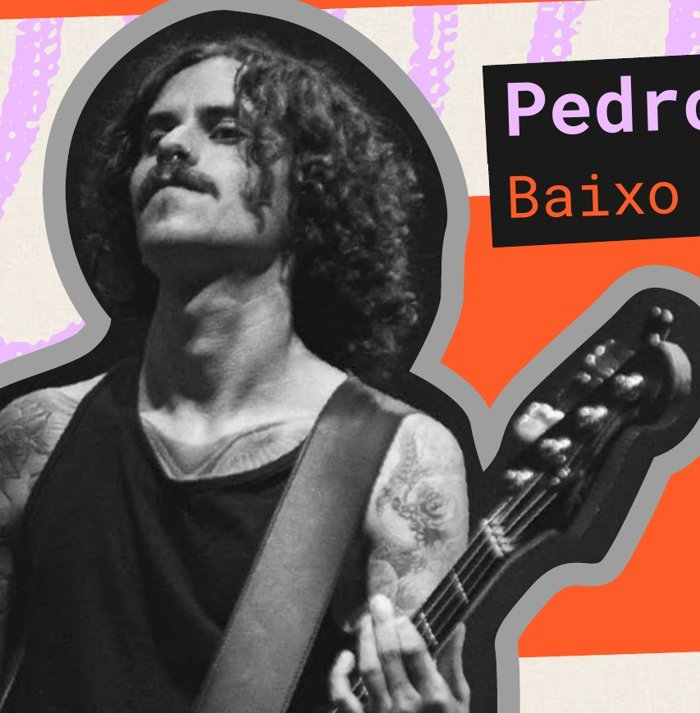

Greg
Bateria
Encontrou na bateria uma paixão desde 2015, inspirado pelo J-Rock. Hoje é o baterista da Riot! Riot!, onde a música serve como seu refúgio pessoal. "Tocar com a Riot Riot me permite ser eu mesmo e esquecer dos problemas". Com energia explosiva e muita alegria vai fazer a galera curtir muito relembrando os hits da banda Paramore.

Pedro
Baixo
Começou a tocar violão aos 12 anos de idade. Montou a primeira banda na adolescência, tocando guitarra e cantando músicas autorais. Aprendeu a tocar vários instrumentos de lá pra cá e encontrou no contrabaixo uma paixão. Hoje se dedica às notas graves e grooves que compõem as músicas do Paramore.

Endy
Guitarra solo + backings
Guitarrista e back vocal, aprendeu a tocar violão ainda no colégio. Com amigos de infância teve uma banda de rock japonês por 5 anos, se apresentando em SP no maior evento de anime da América Latina. Lançou 12 músicas autorais com uma banda de metal, mas sempre foi apaixonado pelo pop emo rock e promete mostrar todo esse amor a cada música tocada no palco.

Beto
Guitarra Base
Começou sua sede por música aos 12 anos, sempre tocando com os amigos da rua na porta de casa, saiu da guitarra para a bateria aos 16 e recentemente se reencontrou nas cordas. Paramore é um projeto especial, que sempre trará alegria e muitas lembranças boas. Dentre dancinhas tortas até a bateção de cabelo, aqui a guitarra base tá garantida.

Fernanda
Vocal
Cantora e apreciadora do mundo musical desde os 5 anos de idade. Integrou bandas desde a adolescência, tocando em casas de show com repertórios variando do pop e rock ao R&B, além de participar de concursos e festivais de canto, tornando-se hoje professora de técnica vocal. Seu lema é a entrega total no palco, proporcionando uma experiência única aos ouvintes, ainda mais quando se fala de Paramore, onde está uma das suas grandes referências artísticas: Hayley Williams.